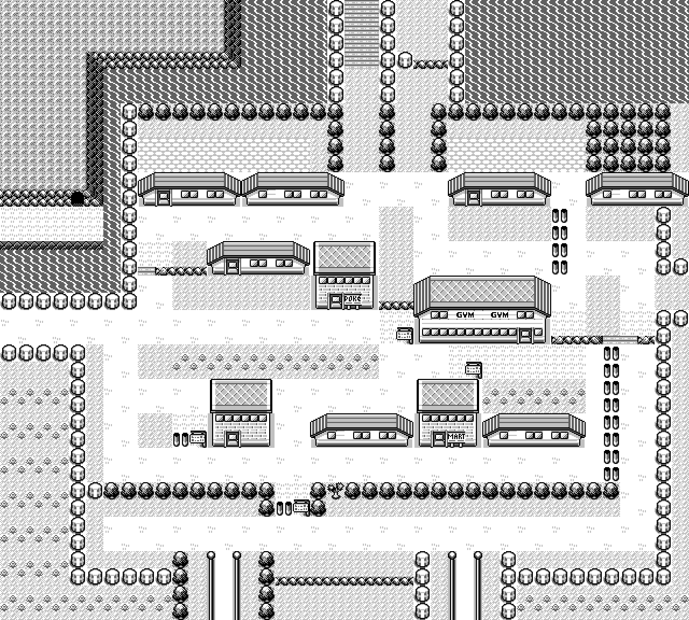
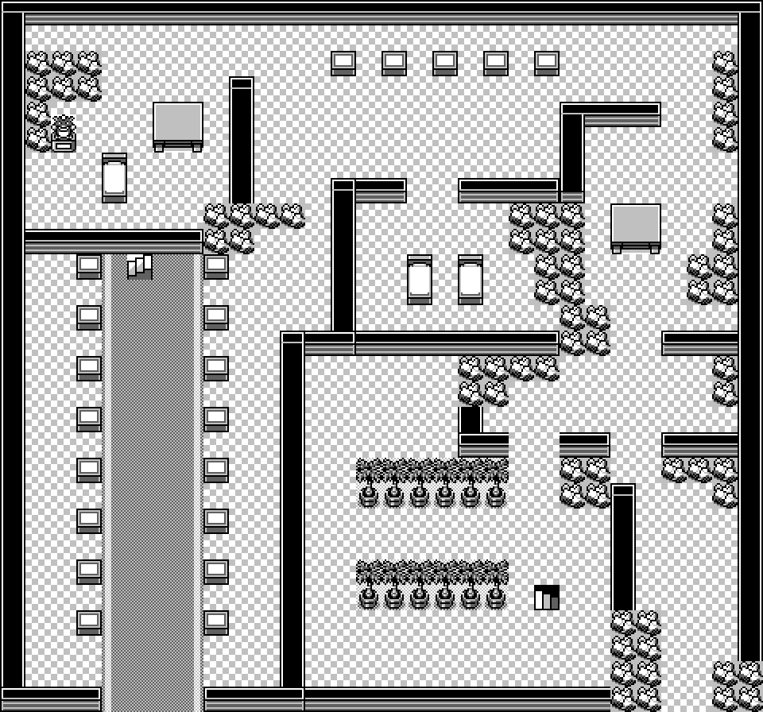

Project · Image extraction
PixelGB
Pictures of every map in a Game Boy cartridge, taken from the console that drew them. PixelGB puts your cartridge in a cycle-accurate emulator, walks the game to each of its 226 maps and lets the game load its own tileset, copy its own art into video RAM, apply its own palette and draw its own screen. Then it renders the same map a second time from the map data and compares the two, pixel for pixel.
One run of pixelgb verify against a Pokémon Blue cartridge (header
title POKEMON BLUE, global checksum $9D0A). Every number
on this page came out of that run.

What it does
Capture
Walk in and take the picture
- Plays the opening, saves the machine's state the moment it stands on a real map, then for each map rewinds to that moment, points one of the current room's warps at the target and walks in
- The engine loads the destination header itself — tileset copy, palette, objects, screen. Nothing is faked
- Dismisses text boxes the way a player does, requiring several consecutive clear checks, because the window parks off-screen between two boxes of one conversation
- Every address it uses comes from AtlasGB, and each constant in the source names the symbol it came from
Output
No invented pixels
- One scaler: nearest-neighbour at whole-number factors only. 1×, 2×, 4×, 8×, every output pixel a perfect square of one source pixel
- A categorical guard on every image out: no colour may appear that was not in the source. A fifth colour stops the run
- Each PNG carries its own verdict, the cartridge's identity, the palette, the scale and the licence — so a file that has travelled away from the report still says which side of the line it is on
- Nothing that varies between two runs may go in the metadata: no timestamp, no hostname, no path. An integration test renders the same map twice a second apart and compares bytes
Topology
All 226, including the unphotographable
- By the time the camera is lost the header has already loaded, so width, connection flags, connection headers and the warp table are all correct
- 226 of 226 observed on a machine that has loaded the map; 223 agree with the static header on every field
- The three that differ are the Celadon Mart, Rocket Hideout and Silph Co. lifts, which point their exit warps back at the room you stepped in from. The observation is true of the visit, the header is true of the cartridge, and the file says so rather than picking a winner
The atlas
One sheet, 6848 × 7024
- The 36 connected outdoor maps go where the cartridge's connection records put them — exact arithmetic, no search, zero placement disagreements
- Interiors have no connections at all, so they are drawn adjacent to the map their door is in, on the side that door is on, in line with it
- Every panel's stamp says which of the two it is
- A panel never covers walkable world or another panel; an intersection fails the render
The four checks
In increasing order of what they prove.
| Check | What it holds up against what | Result |
|---|---|---|
| header | the header the engine loaded, against the one PixelGB read from the same bytes | 226 / 226 |
| size | the cartridge, against pret/pokered's independently declared sizes | 226 / 226 |
| tileset art | the graphics in video RAM, against the cartridge's, for the tiles each map draws with | agree but for animation |
| live blocks | wOverworldMap, against the cartridge's block list | 204 identical, 22 script-changed |
| pixels | the frame the picture processor drew, against the composed map | 212 exact, 3 script-changed, 11 unresolved |
The alignment for the pixel comparison is found, not computed — PixelGB searches a small neighbourhood around where it thinks the camera is and reports the offset at which the two agree. Computing it would test our own arithmetic. Two kinds of pixel are excluded: ones an object may have covered, and ones outside the map proper, where the console is legitimately showing a neighbouring map.
Three findings, none of them defects
| What | What it means |
|---|---|
| 46 maps animate | On those maps video RAM's tileset differs from the cartridge's, and the differing tiles were also seen changing while the map sat still. It is the flower and the water. PixelGB carries no list of animated tiles — it watches for two seconds and reports what moved. Against the cartridge's static art the same comparison gives 193 exact instead of 212, and that 19-map difference is the animation, frozen. |
| 22 maps rewrite their own blocks | Silph Co., the Pokémon Mansion, the Rocket Hideout, two gyms and two Elite Four rooms have squares a map script replaced — doors and lifts not in the state the cartridge stores them in. Three had a changed square on screen when the shutter went. Every differing pixel has to fall inside a square the engine had already changed; one pixel outside and the verdict goes back to a plain disagreement. |
| 22 of 248 map ids are not maps | The map table is a fixed length, so the spare ids' header pointers land on whatever bytes follow. Read as a header, one of them is a plausible 147×132 map with 248 warps. Nothing in the cartridge marks them, so the witness is pret/pokered, which declares them 0×0 — and PixelGB says where that claim came from rather than pretending it read it off the ROM. |

$0E → $2D — differ between the cartridge's stored block
list and the engine's live block map. This render is right about the cartridge; the
photograph from the same run is right about the console.
The eleven that did not agree
Ten have nowhere to arrive. A warp names a destination warp on the far side, and these maps have none, so the engine reads an arrival coordinate out of an empty list and the camera comes to rest outside the map. The header still loads correctly, so the first three checks pass — only the photograph is unusable.
| Id | Map | Id | Map |
|---|---|---|---|
| 14 | ROUTE_3 | 30 | ROUTE_19 |
| 20 | ROUTE_9 | 32 | ROUTE_21 |
| 24 | ROUTE_13 | 35 | ROUTE_24 |
| 25 | ROUTE_14 | 239 | TRADE_CENTER |
| 28 | ROUTE_17 | 240 | COLOSSEUM |
Trade Center and Colosseum are link-cable arenas, unreachable in single player at all. The verdict is decided by what the comparison found rather than refused in advance: Route 1 also has no warps, lands somewhere sensible anyway, and verifies exact. Filtering every warpless map out up front would have been tidier and would have thrown that picture away.
The eleventh is the Hall of Fame, 6,500 of 13,824 pixels apart. Walk in and Oak starts talking, and his script is not one you can press B through — it inducts the party. Where the two renderings disagree, the run writes both pictures and a map of the comparison itself: white where they agreed, black where they did not, mid-grey where nothing was compared.
Writing
-
Let go of the D-pad
One line took the capture from 113 maps to 216. A door is a warp on both sides, and a player still holding the direction walks straight back out.
-
The door rule
The cartridge says where outdoor maps go and says nothing about interiors. Placing 190 rooms is a decision, and it was settled by measurement.
Where these numbers come from
One run of pixelgb verify --rom /path/to/your.gb --out out --scales 1,2,4,8
against a Pokémon Blue cartridge, written up in the project's own verification
record. The three images here are from the published set, copied byte-for-byte apart
from PNG re-compression and still four colours.
PixelGB ships no cartridge and no cartridge data; it reads a cartridge you supply. The addresses come from AtlasGB's evidenced atlas and the emulator underneath is TerminalGB, pinned to a revision. The Game Boy Color rendering is deliberately not published: a Color console running a cartridge with no Color support applies a palette chosen by its boot ROM, that boot ROM is Nintendo's, and inventing the palette would be exactly the reconstruction this project exists to avoid. Pokémon, Game Boy and Nintendo are trade marks of their respective owners.